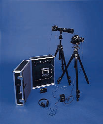

|  |
The ABLEGUARDTM Remote Surveillance System supports all Internet broadband connection including ADSL, cable modem, T1 and wireless, the versatile system can also support remote monitoring using regular phone line. . The ABLEGUARDTM Remote Surveillance System supports all Internet broadband connection including ADSL, cable modem, T1 and wireless, the versatile system can also support remote monitoring using regular phone line. .. |
 |
The system will be located in a locked, shock, dust-free, and water-resistant case to eliminate any damage during normal operating conditions. . This system continuously records all events and secures its recording from being manipulated. The system will be located in a locked, shock, dust-free, and water-resistant case to eliminate any damage during normal operating conditions. . |